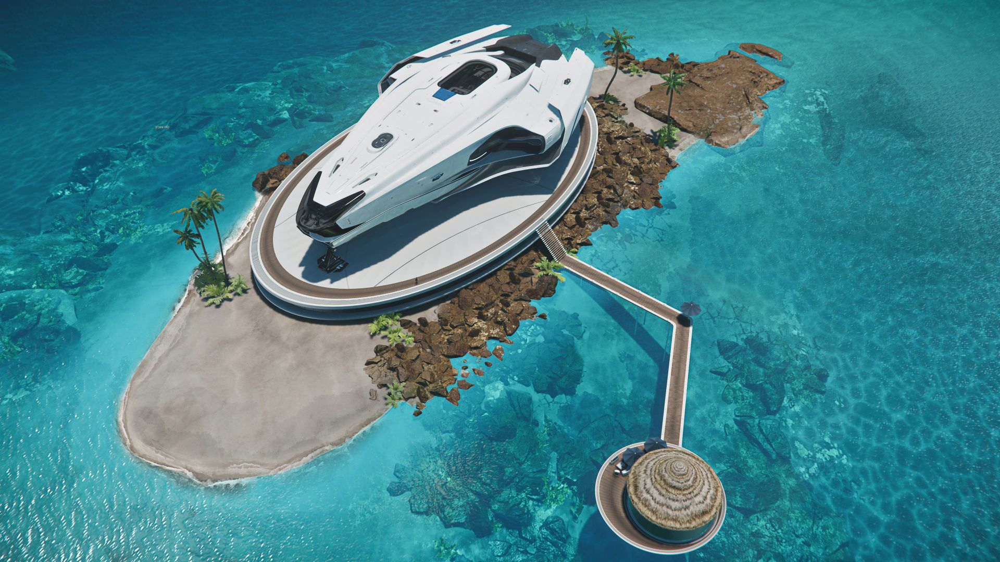

600 Series
Menu
History
The 600i is based on the previous 600 line, manufactured in the 29th century. The line originally began as a function first mid-sized transport. One heavily modified original 600 ship was used by Captain Iggy Decarlo in the Tohil Regatta race on Tohil III, and served as a rescue ship during the environmental catastrophe at Amidon Island. Only as Origin refined their version of luxury after moving to Terra, they went back to the drawing board to bring the 600 in line with Origin's iconic aesthetic. Engineers used the same chassis as before but made major changes to the interior's shape language, used better materials, and added expensive diamond laminate panels to create an observation deck. It was put into full-scale production in 2947, and they added an "i" to the ships name to symbolize the upgrade.
Models
600i Explorer
The Origin 600i Explorer is a multi-role luxury exploration vessel. It swaps the lounge in 600i Touring for a robust scanning station as well as additional utility hardpoints to increase the ship's effectiveness even more.

Features
- Wraparound Canopy: Like some of the Origin ships, 600i comes with a canopy without struts blocking the front view. It provides stunning vistas and better situation awareness for the bridge crew.
- GLAX Hull Plating: The Origin's proprietary GLAX plating allows the ship to be much lighter than comparably sized ships.
- Exploration Module: The Exploration Module is designed to bring luxury and comfort to those long-haul exploration missions in deep space. In addition to the Explorer module's comprehensive scanning array and utility hardpoints, this module offers an increased cargo capacity to make sure you have all the room you need for extra supplies or for bringing back more discoveries. The bridge contains a mapping table and additional slots for avionics and utility systems. The Exploration Module also adds a garage with a deployable ramp for ground exploration.
- Origin G12 Touring: The ship also comes with an Originː G12 Touring rover.
600i Touring
The Origin 600i Touring is a multi-role luxury vessel that features an exquisitely detailed hull design that balances performance and versatility in a sleek and timeless form. The 600i is designed with a cutting-edge modular technology, allowing you to customize your ship for your needs.

Features
- Wraparound Canopy: Like some of the Origin ships, 600i comes with a canopy without struts blocking the front view. It provides stunning vistas and better situation awareness for the bridge crew.
- GLAX Hull Plating: The Origin's proprietary GLAX plating allows the ship to be much lighter than comparably sized ships.
- Touring Module: The touring module lets your guests relax in ease with stunning furniture from some of the Empire's top designers. It provides a lounge area featuring all the amenities to keep you and your guests entertained for those long flights. Featuring a lounge with exclusive Tatavo sofas, a gamespace, and a communal holoscreen, your guests might start asking for the journey to take a little longer. Along with its four queen-size suites, fully stocked bar, and executive kitchen, the Touring module turns the 600i into a "Private yacht" style of ship.